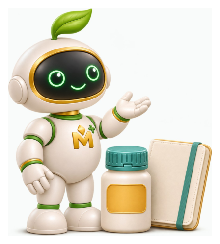
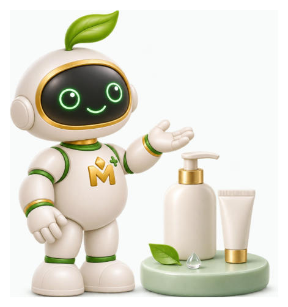
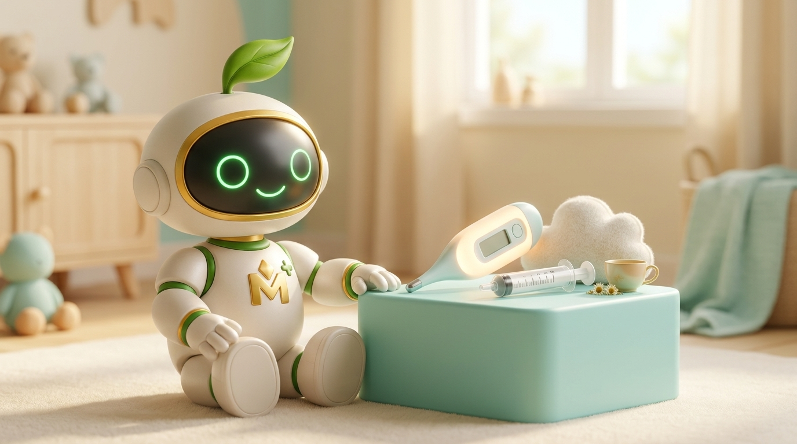

سؤال درباره سلامت کودکت داری؟
مانو کمک میکند مسیر بعدی را بشناسی.
از تب و سرفه تا پوست، تغذیه و داروهای رایج کودک؛ اطلاعات قابلفهم، نشانههای مهم مراجعه و پرسشهایی که بهتر است از داروساز بپرسی.

امروز در چه زمینهای کمک میخواهی؟
دستهای با این عبارت پیدا نشد. یک واژه کوتاهتر مثل «تب» یا «دارو» را امتحان کن.
دنیای مانو، کنار خانواده
یک مسیر یکپارچه برای پیدا کردن اطلاعات، آموزش و آمادگی برای مشاوره؛ نه خدمات درمانی فعال.


از پرسش روزمره تا اطلاعات مستند
هشت راهنمای آموزشی با منابع مشخص؛ هنوز در انتظار بازبینی بالینی. این مطالب جایگزین معاینه یا تعیین دوز نیستند.
۸ راهنمای آموزشی
موضوعی پیدا نشد؛ عبارت کوتاهتر را امتحان کنید.
قبل از هر کاری، نشانههای مهم را بشناس
این راهنمای کوتاه فقط نشانههای عمومی نیاز به ارزیابی فوری را یادآوری میکند؛ نبود این نشانهها به معنی سالمبودن یا بینیازی از ویزیت نیست.

مبنای اولیه: توصیههای عمومی AAP و NICE؛ محتوای فارسی نیازمند بازبینی بالینی نهایی است.
راهنمای کاملتر تب کودک و زمان مراجعه ←بررسی سریع شرایط هشدار
اطلاعات واردشده ذخیره یا ارسال نمیشوند.
اگر حال عمومی کودک نگرانکننده است، برای دریافت راهنمایی منتظر تکمیل این فرم نمان.
قبل از مصرف، اطلاعات روی دارو را دقیق بخوان
همنام بودن دو شربت به معنی یکسانبودن غلظت آنها نیست. از نام ماده مؤثره، شکل دارویی و غلظت روی بستهبندی مطمئن شو.
برای مراقبت پوست کودک، از مشاهده درست شروع کن
محل ضایعه، زمان شروع، خارش یا درد، تب و تغییرات اخیر محصولات را یادداشت کن. تشخیص نوع راش تنها از یک تصویر همیشه ممکن نیست.
هر کودک، مسیر رشد خودش را دارد
رشد را با یک عدد وزن یا یک وعده غذایی قضاوت نکن. سن، روند رشد، علائم همراه و سابقه تغذیه باید کنار هم بررسی شوند.
 بدون برنامه غذایی خودکار
بدون برنامه غذایی خودکارپاسخهای کوتاه به دغدغههای رایج
برای تصمیمهای پزشکی، وضعیت خاص فرزندت باید توسط متخصص بررسی شود.
برای کودک زیر سه ماه با تب چه کار کنم؟
تب ۳۸ درجه سانتیگراد یا بالاتر در کودک زیر سه ماه نیازمند ارزیابی فوری پزشکی است. خودسرانه داروی تببر نده.
آیا شربت و قطره استامینوفن یک غلظت دارند؟
خیر، غلظت فرآوردهها ممکن است متفاوت باشد. نام دارو و مقدار ماده مؤثره در هر میلیلیتر را از روی بسته بررسی کن؛ مقدار مصرف باید با نظر پزشک یا داروساز مشخص شود.
آیا با عکس میتوان نوع راش پوستی را قطعی تشخیص داد؟
خیر. ظاهر ضایعه به تنهایی کافی نیست و گاهی شرححال یا معاینه ضرورت دارد؛ بهویژه اگر تب، درد شدید، بیحالی یا بدترشدن سریع وجود داشته باشد.
آیا مانو در حال حاضر مشاوره آنلاین واقعی ارائه میکند؟
خیر. این نسخه یک پیشنمایش آموزشی است. پنل امن مشاوره و فرایند بررسی داروساز هنوز به سرویس عملیاتی متصل نشدهاند.
برای یک مشاوره بهتر، سؤال را روشنتر آماده کن
این نسخه هنوز درخواست یا پروندهای برای داروخانه ارسال نمیکند. میتوانی قالب بدون مشخصات هویتی زیر را کپی و در مراجعه حضوری استفاده کنی.
مانو در این نسخه چه کار نمیکند؟
تشخیص بیماری، تجویز یا محاسبه دوز، ثبت داده سلامت کودک، ارسال درخواست مشاوره، تأیید داروساز و پیگیری خودکار در این وبسایت فعال نیستند. تعاملهای این صفحه فقط روی دستگاه خودت پردازش میشوند.
این اطلاعات چگونه تهیه و بررسی میشوند؟
نسخه فعلی پیشنمایش است؛ مطالب پزشکی هنوز تأیید نهایی بالینی ندارند و نباید جایگزین تشخیص یا مشاوره حضوری شوند. نام نویسنده یا بازبین علمی تأییدشدهای برای این نسخه اعلام نشده است.